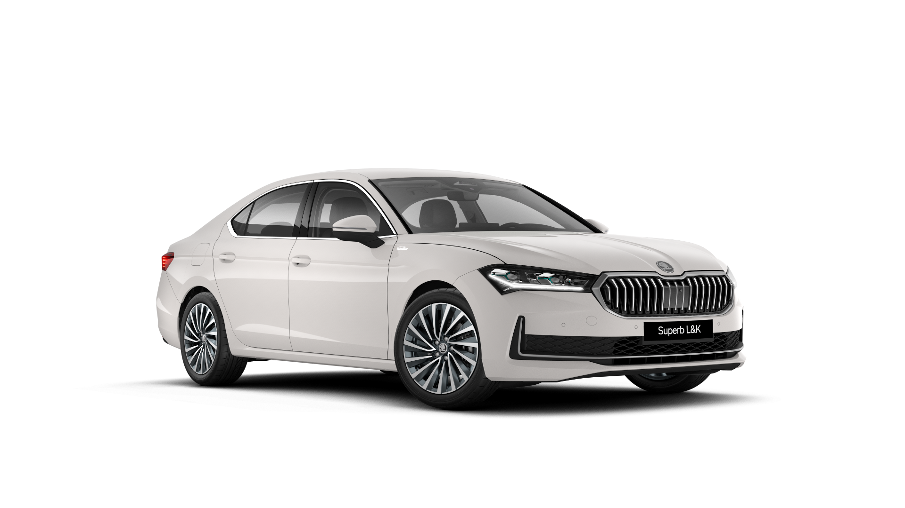

Skoda Superb
1.5 TSI/110kW mHEV motor

| Márka | Skoda |
|---|---|
| Modell | Superb |
| Évjárat | 2023 |
| Üzemanyag | Benzin |
| Hengerűrtartalom (cm³) | 4/1,498 |
| Végsebesség (km/h) | 225 |
| Gyorsulás 0-100 km/h (s) | 9.2 |
| Meghajtás típusa | Elsőkerék-meghajtás |
| Sebességválto | Hétfokozatú automata, DSG |
| Megengedett vontatóterhelés fék nélkül (max. kg) | 750 |
| Megengedett vontatóterhelés fékkel – 12% (max. kg) | 2,200 |
| Vélemény | Nagyon kényelmes és gazdaságos autó, ideális hosszú utakra. |